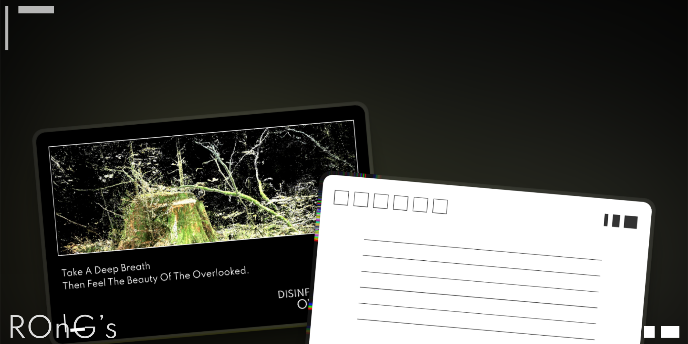
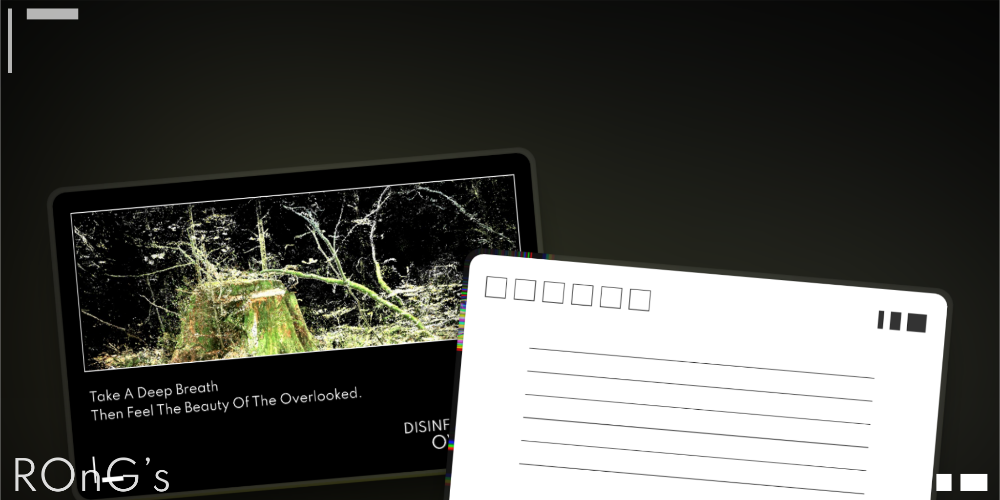
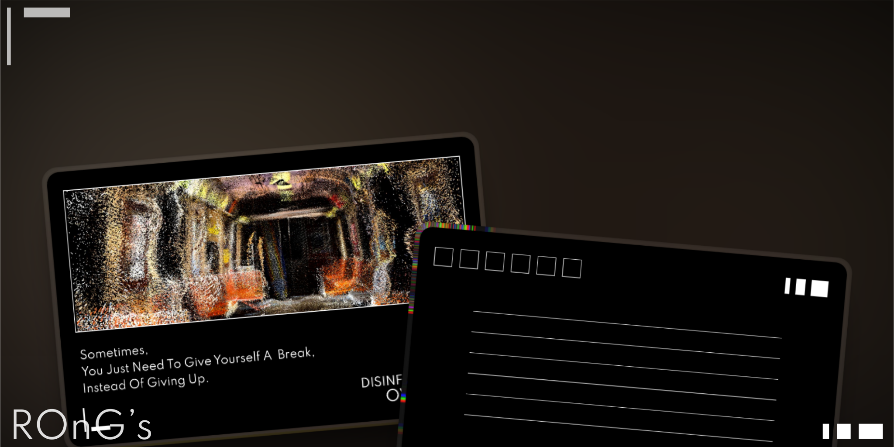
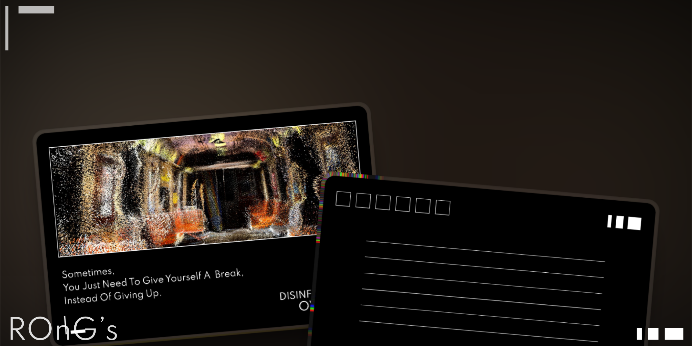

'Disinformation Overload' is an interactive art installation that explores the phenomenon of information overload in the digital age. Using TouchDesigner for visual development and Kinect for motion sensing, the installation will presents a myriad of 3D model composed of thousands of dynamic particles according to the audience's movements.

 

 
